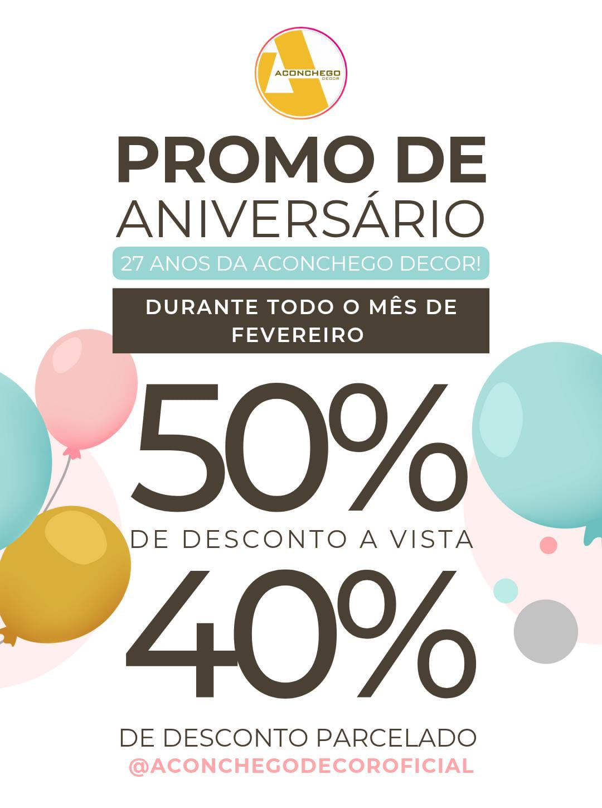

Editora de Vídeo • Conteúdo Digital • Artes para Redes Sociais
Sou editora de vídeo com experiência em conteúdos para redes sociais, vídeos promocionais, vídeos curtos (Reels, Shorts e TikTok) e YouTube. Também desenvolvo artes e imagens para lojas e marcas.
Atualmente atuo como editora de vídeos para um canal infantil no YouTube, desenvolvendo conteúdos de entretenimento voltados ao público infantil, com foco em ritmo dinâmico, efeitos visuais, sonorização, retenção de audiência e narrativa envolvente.
Meu trabalho envolve a criação de vídeos com cortes dinâmicos, inserção de efeitos sonoros, animações, zooms, elementos gráficos e recursos visuais que tornam a experiência mais divertida e atrativa para o público infantil.
Conteúdos desenvolvidos para divulgação de produtos nas redes sociais.
Conteúdos autorais de gameplay, com foco em cortes dinâmicos, timing cômico e edição voltada para retenção de audiência.
Conteúdo autoral de gameplay em formato longo, com edição voltada para narrativa, ritmo contínuo e retenção ao longo do vídeo.
Outros trabalhos e variações de edição estão organizados em uma pasta no Google Drive.
Ver mais vídeos no Google DriveTambém desenvolvo artes para redes sociais, campanhas promocionais e divulgação de produtos para lojas.

📧 gabrielarj.art@gmail.com